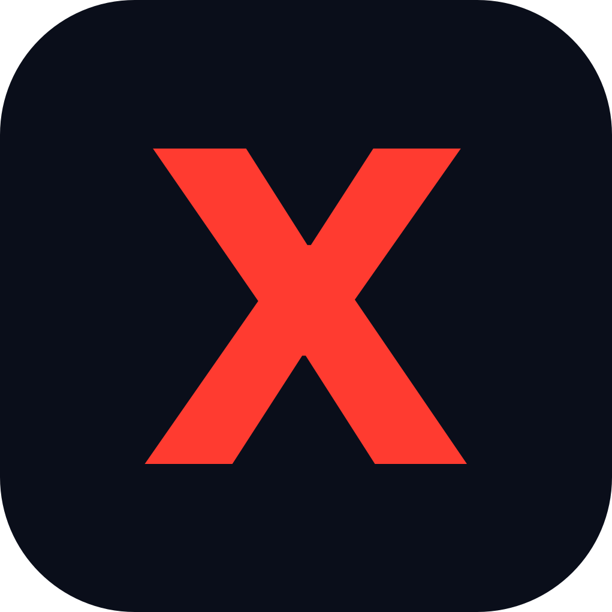
Monogram tile: avatars, favicon, app icon
One typeface, one dark world, one red letter. This system follows the discipline of the brands we sit beside: Anthropic, OpenAI, Apple, Palo Alto Networks, and CrowdStrike all run restrained engineered sans-serif systems with a single signature accent. Nothing curly, nothing decorative, nothing that needs explaining.
Primary lockup: lowercase wordmark, Archivo SemiBold 640, tracking minus 12, the final x in Brand Red, with the signal line drawn beneath. The line passes behind the descender of the y, never in front of it. No accompanying symbol. The standalone red x on an ink tile is the monogram for avatars, favicons, and app icons.
Primary · the line lockup on Ink
The line lockup on light surfaces
Plain wordmark · for tight spaces where the line cannot breathe
On light surfaces the red deepens to #E02D22
Always place the lockup as artwork (SVG or PNG from the kit). Never rebuild it in type with a rule drawn separately; the line's weight and position are part of the drawing.

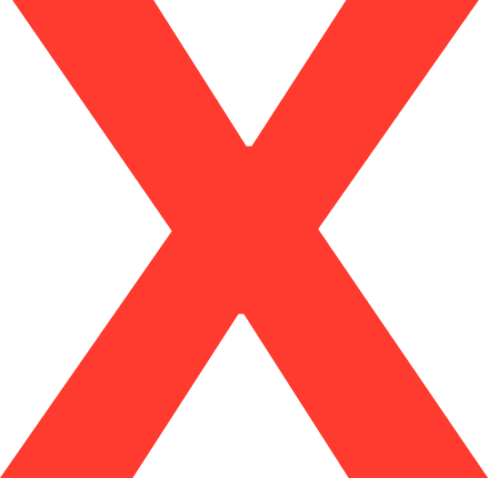
Surfaces are ink, text is paper, and red belongs to the identity alone. The three pillar colors are functional: they mark Transform, Defend, and Achieve content, and never appear together except in the pillar story.
| Rule | Detail |
|---|---|
| Red budget | Red is the signature and the emphasis: the x, the monogram, one watermark, emphasized headline words, and the defense beam. Never a button, chart color, or section wash. |
| Surface ratio | Roughly 80% ink, 15% paper text, 5% accent. Dark-first everywhere; light surfaces are for print and documents. |
| One accent per section | A given section or slide uses one pillar color at most. All three appear only in the pillar story itself: the orb's spectrum and the signal line. Buttons are always Signal Blue. |
A grotesque built on the American gothic tradition: flat terminals, engineered curves, made for headlines and data. One family across web, decks, print, and product keeps every surface unmistakably ours, the same discipline as Apple with SF or Google with Google Sans. Weights 400 and 500 carry text, 600 carries the wordmark and labels, 700 carries headlines.
Google Fonts: Archivo 400/500/600/700/800. Desktop files: Archivo variable TTF in the kit. Fallback stack: system-ui, sans-serif. No second typeface exists in this system.
| Principle | Spec |
|---|---|
| Entrances rise | 22px rise + fade, 700ms, cubic-bezier(.16,1,.3,1), staggered 120 to 140ms |
| Lines draw | Signal paths draw with scroll or over 600ms; never fade a line in |
| The x snaps | Logo motion: letters cascade, the red x scales from 1.6 to 1 with a two-frame flicker, then a red rule scans out. 2.0s total, plays once. |
| Restraint | One orchestrated moment per surface. Everything else is state feedback under 200ms. Reduced motion: all entrances off, content visible. |
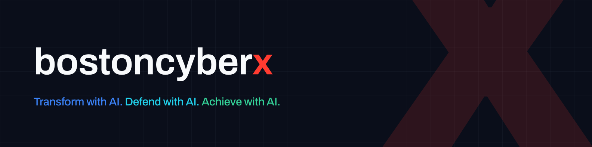
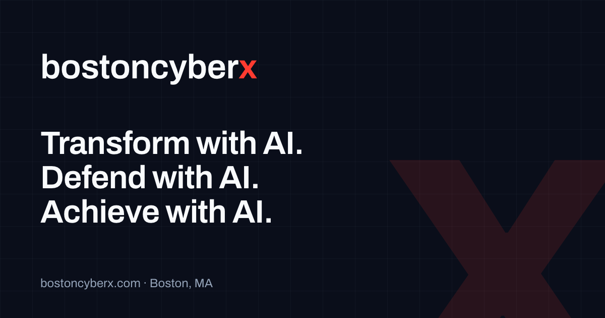
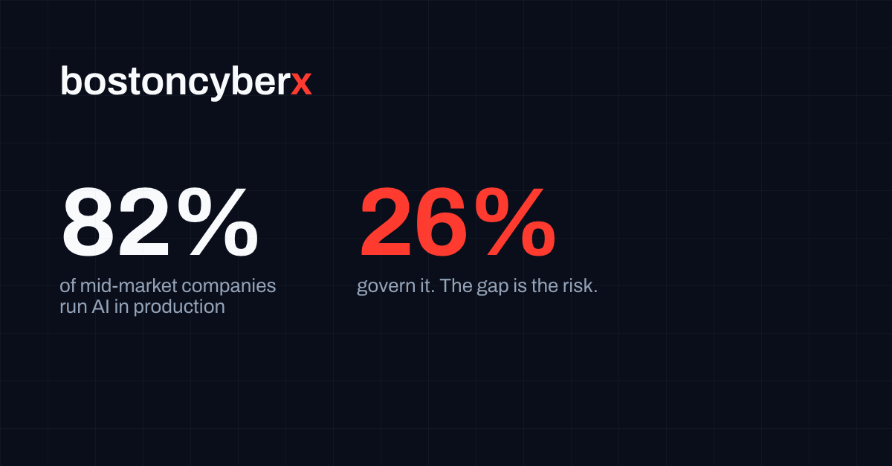
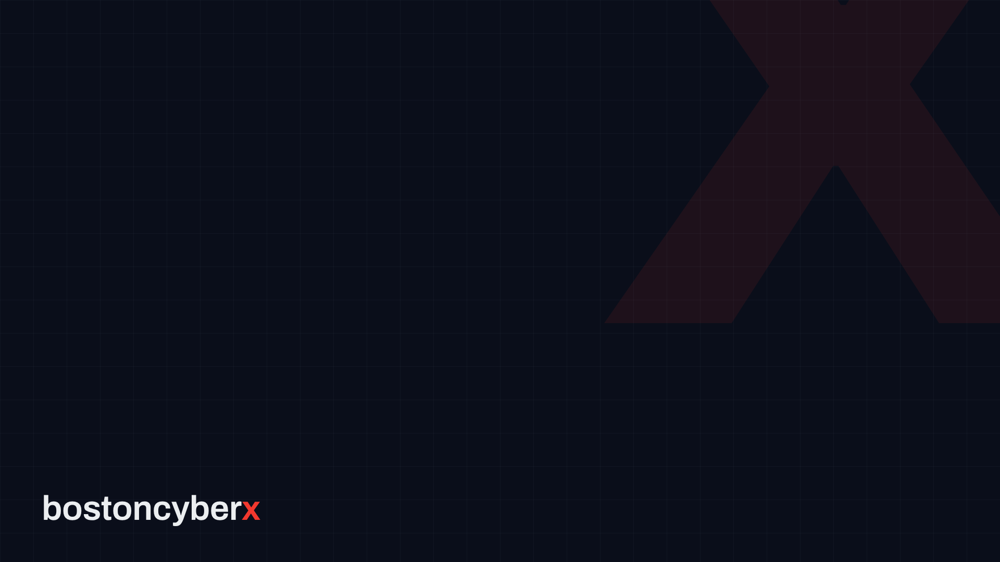
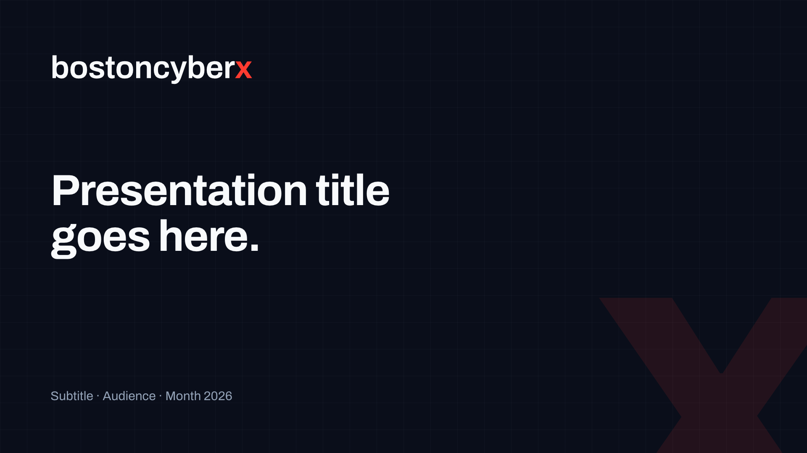
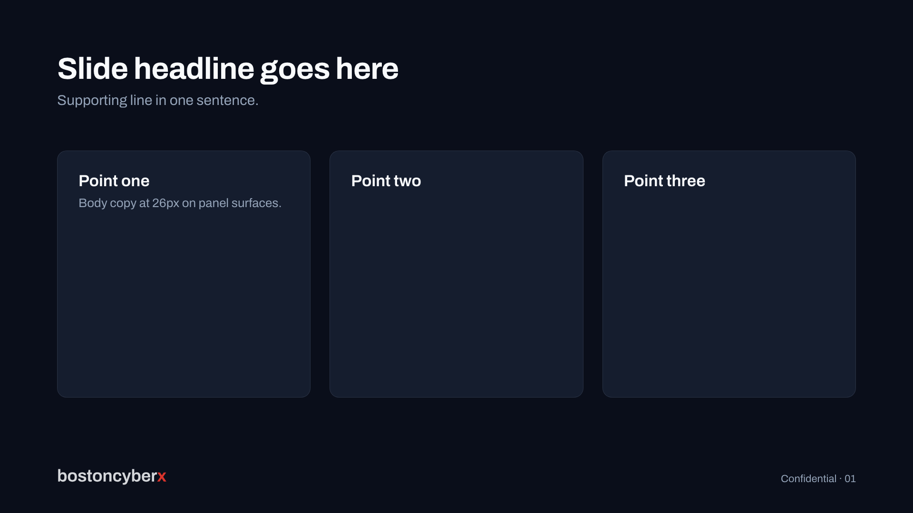
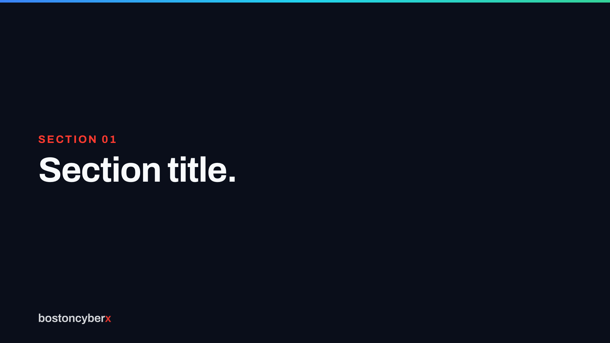
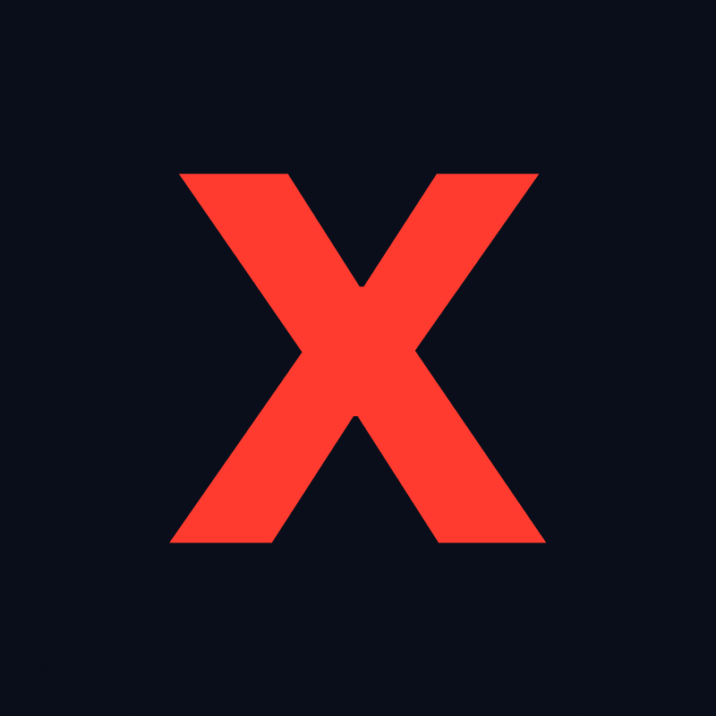
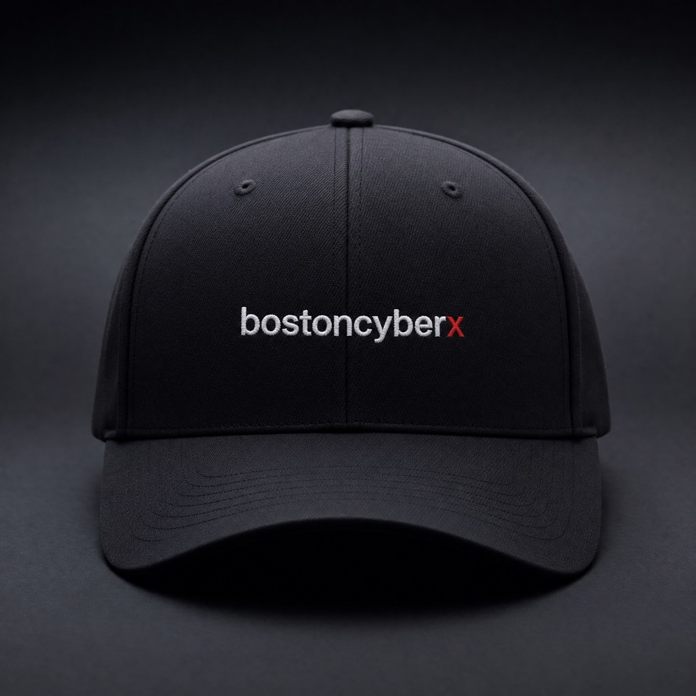
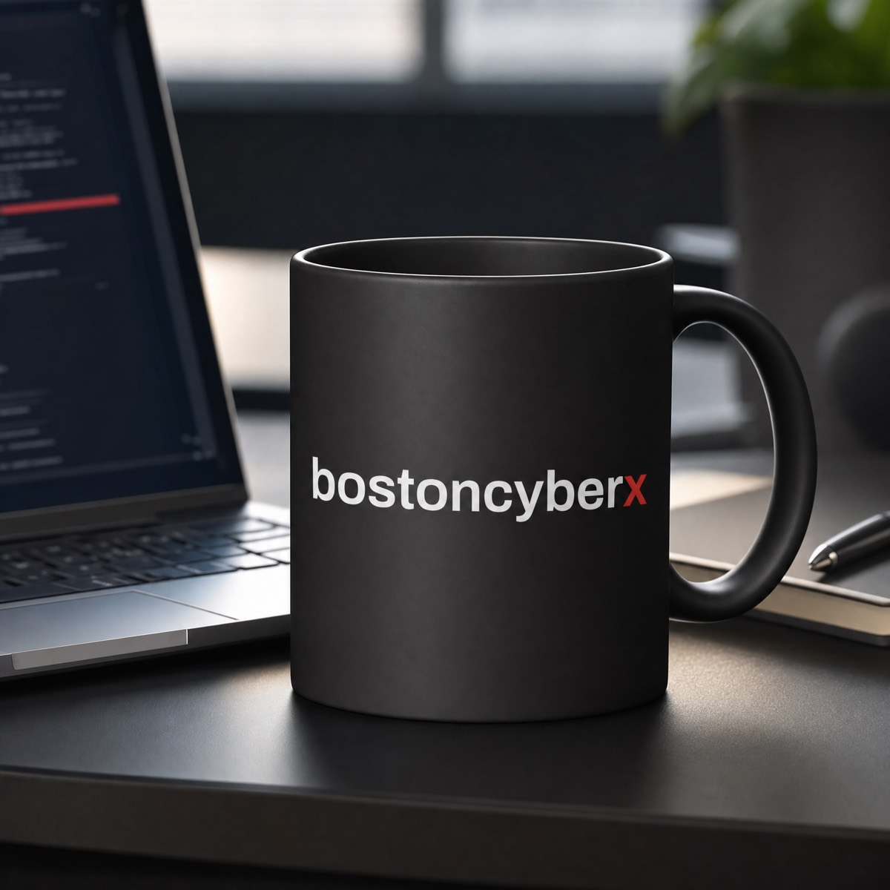
| File | Location in repo |
|---|---|
| Vector logos + motion | brand/logo/ (SVG, outlined; motion SVG + HTML) |
| Social kit | brand/social/ (banner, avatar, OG, quote, stat) |
| brand/print/ (business card, letterhead, 18×24 event poster; print-ready PDF) | |
| Zoom backgrounds | brand/zoom/ |
| Deck frames | brand/deck/ (1920×1080 masters for any deck tool) |
| Merchandise mockups | brand/merch/ (cap, tee, mug, hoodie) |
| Font | brand/src/Archivo.ttf (variable, OFL licensed) |
Plainspoken expert. Calm under threat. Numbers over adjectives. Second person. Never em or en dashes. Never: cutting-edge, world-class, tailored solutions, industry leading, unlock, leverage as a verb. The name is always lowercase bostoncyberx; BCX is the short form; the x is always red.